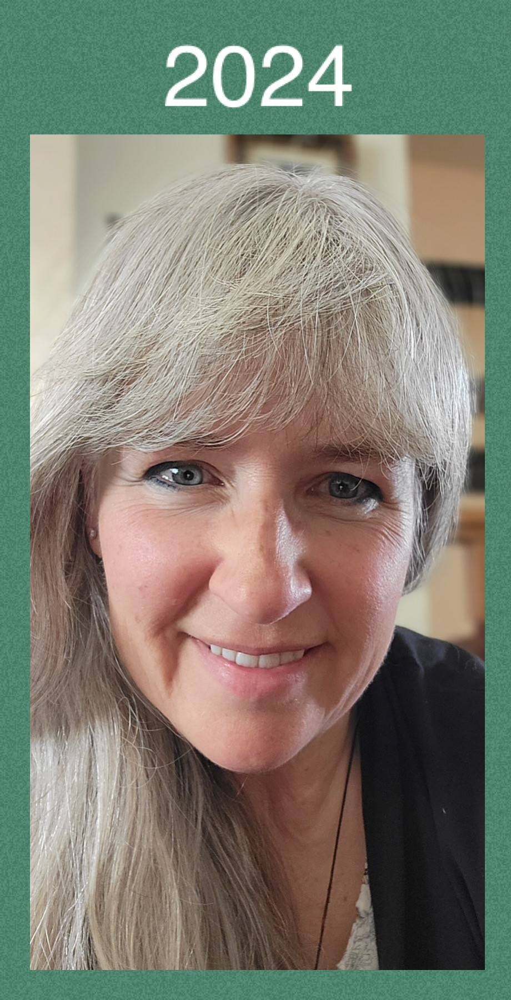

More about Gina
In 2000, Gina started experiencing severe health issues, finally in 2004 she was diagnosed and her throat was shrinking. Over the years, her condition worsened, and her trachea eventually became as narrow as the tip of a ballpoint pen. This made breathing extremely difficult and posed a significant risk to her life. After 15 years of struggling, Gina underwent a high-risk surgery to remove the constricted part of her trachea and stretch the remaining section, which was then sewn together. This surgery was a turning point for Gina, as it allowed her to breathe more easily and gave her a new lease on life.
Motivated by her desire to be there for her 9-year-old daughter and husband, Gina decided to prioritize her health. She began searching for ways to improve her well-being. During a work conference, participants were asked to write down their biggest dreams and hang them on a wall, hoping someone else could help them achieve these dreams. Gina wrote that she wanted to improve her health. Three people responded with helpful information, one of whom was an Optavia coach. This encounter marked a significant change in Gina's life. Gina embraced the Optavia program, which focuses on healthy eating and lifestyle changes. She lost weight, improved her breathing, and felt better overall. Inspired by her own transformation, Gina decided to become an Optavia coach to help others who, like her, wanted to improve their health. She found fulfillment in guiding others on their health journeys.
Today, Gina continues to work as an Optavia coach, but her commitment to health doesn't stop there. She has expanded her focus to include not just physical health, but also mental, emotional, and spiritual well-being. Gina's story is a testament to the power of resilience, determination, and the impact of a supportive community.